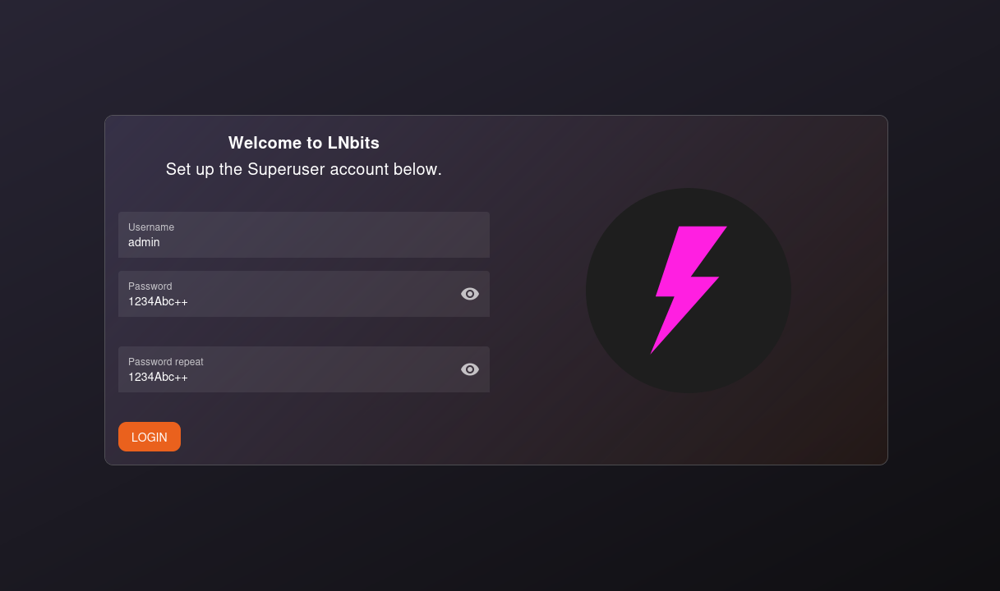
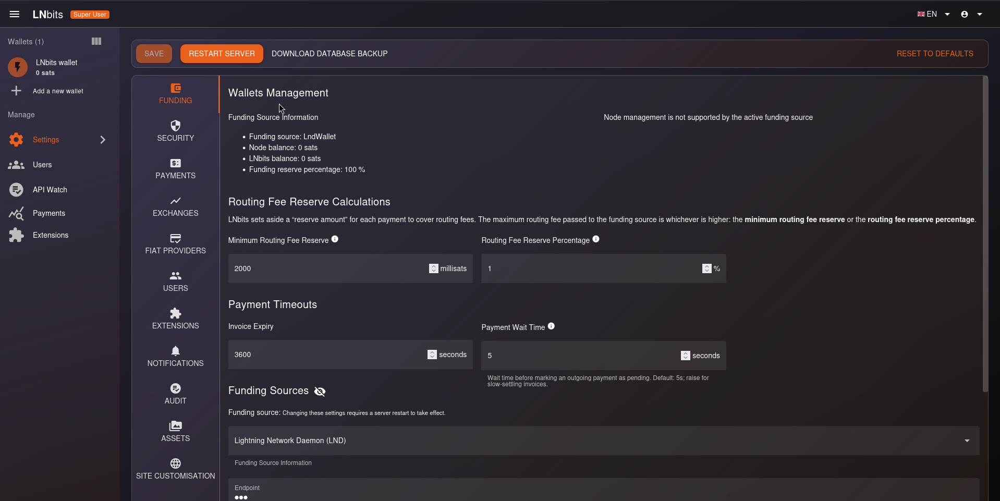

LNbits - La navaja suiza de la infraestructura
LNbits es una solución de billetera y sistema de cuentas que corre sobre el nodo LND, permitiendo segmentar fondos y habilitar funcionalidades extendidas mediante extensiones. Es el motor que procesa las transacciones de los demás servicios. Se puede decir que es la navaja suiza Lightning.
Inicializando LNbits
Siguiendo con nuestro entorno de pruebas accedemos a https://lnbits.cashu4community.xyz si aun no has configurado este Proxy Host en NPM ve a la sección Crear un Proxy Host del servicio Nginx Proxy Manager.
Al acceder se nos muestra la página de inicializar la instalación, solo necesitaremos introducir un nombre de usuario y la contraseña de este dos veces.

En el ejemplo estamos usando el usuario admin con la clave 1234Abc-+ ustedes usarán el que deseen.
Luego de crear la cuenta el sistema nos lleva a la página de ajustes (Settings).

Por el momento no es necesario modificar nada aquí, así que pasamos a crear la billetera que usará el Mint de Cashu.
Vamos a usar la cuenta admin y renombraremos la billetera por defecto para que sirva de backend del Mint de cashu, luego optendremos la apikey para realizar para realizar y recibir pagos.

- Seleccionamos la billetera
- Vamos al panel derecho específicamente a
Wallet Config - Cambiamos el nombre por
Cashu Mint(puede ser el nombre de su preferencia) - Presionamos
Update Name
De esta forma ya tenemos identificada la billetera que se usará para almacenar los fondos del Mint de Cashu.
Ahora necesitamos la clave para realizar y recibir pagos un poco mas abajo aparece la opción Node URL, API keys...

- Cualquiera de las dos llaves funcionara pero la de admin tiene mayor privilegio
- Hacemos clic en el ícono del portapapeles y copiamos la clave en un archivo de texto para luego cuando pasemos a configurar el Mint de Cashu usemos esta clave
Actualizando LNbits
El proceso de actualizar la versión de LNbits es facil; pero debemos respaldar la base de datos para evitar perder datos por fallo en una actualización.
1. Respaldar la base de datos
Ejecutamos:
docker exec -it app_lnbits bash
pg_dump -h db -u lnbits_user -p -d lnbits_db > data/lnbits-db.sql2. Actualizamos el número de versión en el docker-compose.yml
Editamos el archivo docker-compose.yml ubicado en la raíz del proyecto.
Localizamos el servicio lnbits específicamente la siguiente linea:
lnbits:
image: lnbits/lnbits:v1.4.0Como se observa es la version de lnbits es la 1.4 y en el momento en que se redacta este tutorial esta en su versión 1.5.3. Actualizamos el archivo con la versión más reciente.
lnbits:
image: lnbits/lnbits:v1.5.33. Hacemos efectivo los cambios
docker-compose up --force-recreate lnbits -dEste proceso eliminará el contenedor con la versión vieja descargará la nueva versión y realizará las actualizaciones a la base de datos en caso de ser necesario.